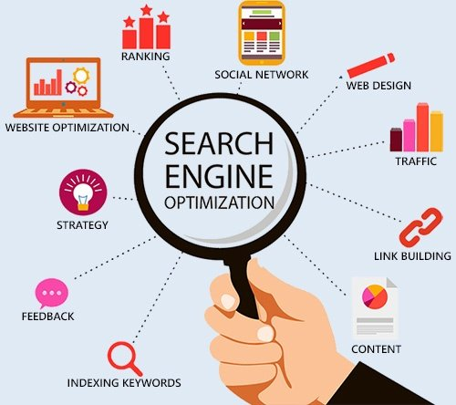
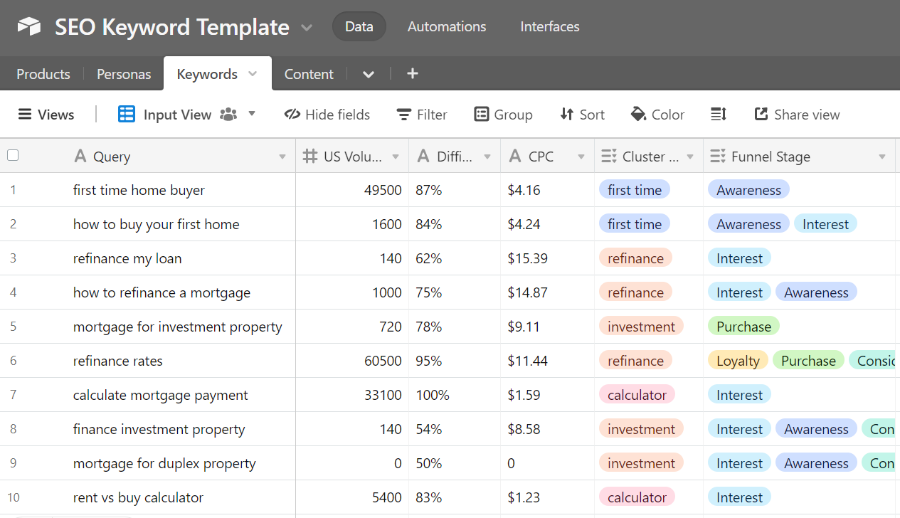

What is + Types of (SEO)
What is SEO?
SEO is short for Search Engine Optimization. Which can help drive traffic and increase views online. All the websites uses SEO, there are many types of SEO, even YouTube videos has it. SEO helps more people find your content when using any search engines (like Google and Bing). It is a digital marketing practice, which can help improve any website's visibility online. "The better visibility your pages have in search results, the more likely you are to be found and visited."

12 Major Types of SEO:
- On-Page SEO - "Optimizing individual web pages to improve their search engine rankings and attract more traffic."
- Off-Page SEO - "Through external factors like backlinks, strategies focused on improving a website’s authority and popularity."
- Technical SEO - "Optimizing the technical aspects of a website to improve its crawling and indexing by search engines."
- Local SEO - "Targeting local customers by optimizing a website for local search results."
- E-Commerce SEO - "Optimizing online stores to improve visibility and drive sales."
- Video SEO - "Optimizing video content to rank higher in search engine results pages (SERPs)."
- Image SEO - "Optimizing images on a website to improve visibility in image search results."
- International SEO - "Optimizing a website to target audiences in different countries or regions."
- Voice SEO - "Optimizing content and website structure for voice search."
- YouTube SEO - "Optimizing YouTube videos and channels to rank higher in YouTube’s search results."
- Social SEO - "Optimizing social media profiles and content to improve visibility and rankings in search engines."
- Content SEO - "Optimizing content on a website to improve its relevance and visibility in search engine results."
Example of a SEO Keyword Template:
In this picture, you can see keywords. Each of them are input query and has filters for views, CPC, volumes, etc.
